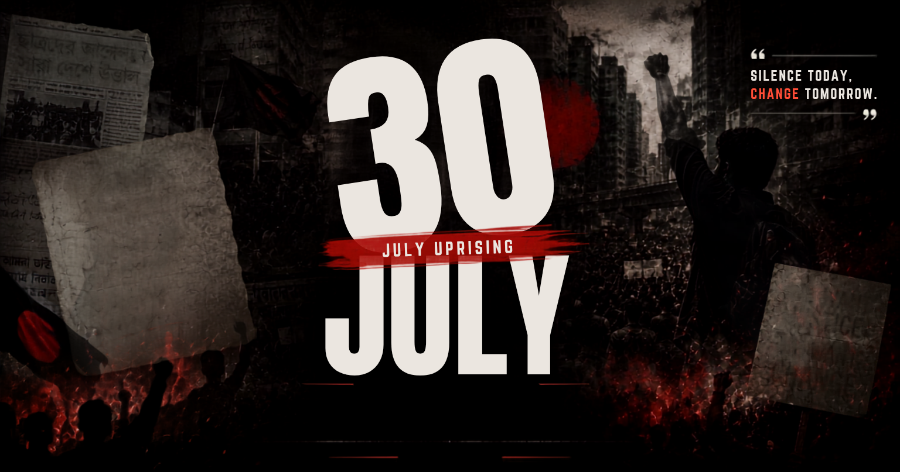

ISTIACK'S JULY CORNER
Read in Bangla/বাংলায় পড়ুন

Share Link
Download / Print
Select Print Language
Print in English Only
Print in Bangla Only (বাংলা)
Print Both Languages (উভয়)
Message copied successfully!